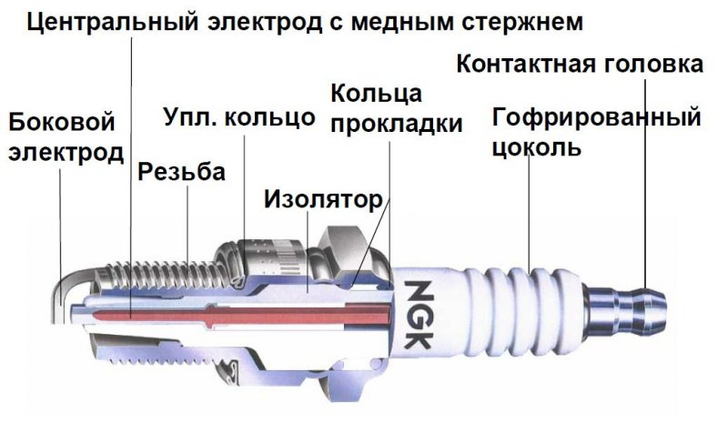

Корпус свечи ввинчивается в головку цилиндров. Высокопрочная техническая керамика служит материалом изолятора. Внутри керамической части свечи закреплены контактный стержень и центральный электрод. Между ними может быть расположен резистор, который подавляет радиопомехи. К корпусу приварен боковой электрод.
Из-за особенностей конструкций центрального электрода и конструктивных особенностей изолятора свечей, делятся они на холодные и горячие.
Горячие свечи зажигания имеют большую поверхность изолятора, которая выдается в камеру, и «доступна» для обогрева горящими газами, а зону перехода от изолятора к оболочке - маленькую.
Холодные имеют большую зону для отвода тепла, и их рабочие поверхности нагреваются меньше. Калильным числом свечи характеризуется способность накапливать тепло.
Чтобы правильно подобрать свечу, нужно использовать таблицу взаимозаменяемости или фирменный каталог, потому что каждая фирма – изготовитель применяет свою систему кодировки.
Чтобы двигатель работал, необходимо, чтобы воспламенялась смесь в цилиндрах. Воспламенение происходит от искры, возникающей между электродами свечи.
Если зазор между электродами 0,6 – 0,8 мм, и при нормальном составе смеси искра появляется, когда разность потенциалов между электродами около 10 киловольт.
Искра пробивает между электродами, смесь в небольшом количестве нагревается до температуры воспламенения, и вспыхивает остальная смесь. Дальше пламя распространяется по всей камере сгорания.
Если зазор между электродами меньше, то искра появляется при меньшем напряжении. Это не лучший вариант. Снижается мощность и увеличивается расход топлива. Если же зазор между электродами свечи больше нормы, то искра, наоборот, появляется при высоком напряжении. Это приводит к перебоям в работе двигателя, к проблеме при запуске, особенно, в сырую погоду.
Не только свеча влияет на работу двигателя, но и сам двигатель может испортить свечу. Свечу может загубить слишком богатая, или слишком бедная смесь, неисправности в катушках зажигания, или в проводах.
Свечи снабжают платиновыми вставками на электродах для усиления работы. Платина устойчивее к коррозии, чем хромо-никелевые сплавы.
Свечи могут быть с тремя, или с четырьмя боковыми электродами. Часто думают, что четыре электрода улучшают воспламеняемость смеси, но оказывается, совсем наоборот. Поджигаемость и эффективность сгорания ухудшаются, но увеличивается срок службы свечи. В свече с четырьмя боковыми электродами искра появляется между центральным и ближайшим боковым электродом. Когда этот боковой электрод изнашивается, в дело вступает следующий ближайший. Так, боковые электроды и работают по очереди, увеличивая срок службы свечи.
Сгорание смеси свечей с несколькими электродами ухудшается, потому что доступ к искре затруднен. И тем более чем больше электродов в свече, тем интенсивнее отводится тепло от свечи. На таких свечах больше образовывается нагара. По внешнему виду свечи можно поставить диагноз топливной системе.
Если отложения на свече коричневого цвета, значит, двигатель работает нормально. Также это указывает на правильно настроенные карбюратор/инжектор и зажигание.
Нагар бархатистого черного цвета говорит о слишком обогащенной смеси, слишком частом запуске без работы под нагрузкой, или о позднем зажигании. После регулировки зажигания и питания такой нагар самостоятельно исчезает. Чтобы быстро выжечь нагар, осуществляют поездку на высоких оборотах. Но если причина образования отложений не выяснена, это делать бесполезно.
Нагар черный маслянистый, который похож на деготь, говорит о холодной свече. Это может быть, если свеча не подходит двигателю, если компрессия почти отсутствует, если искра на свече появляется нерегулярно, если в камеру сгорания попадает лишнее масло или засорилось вентиляционное отверстие картера. В этом случае цилиндр не выдает нужной мощности, в цилиндре изнашивается зеркало, двигатель троит.
Свечи светлого цвета с оплавленными электродами говорят о бедной смеси, образовании отложений в цилиндре, и о раннем зажигании.
Отложения красно – коричневого, желтого или белого цвета на работу свечи не влияют, но могут создавать перебои при работе на высоких оборотах. Такие отложения также скапливаются на днищах поршней и на клапанах. Отложения такого вида ухудшают тепло-отвод, а отложения на тарелке и стержне клапана ухудшают наполнение цилиндров. Проблема в таком нагаре заключается в том, что он не выжигается, а удаляется только механически.
Детонация.
К детонации ведут низкое октановое число бензина, или слишком раннее зажигание. Все это вызывает сильнейший удар в камере сгорания, что приводит к повреждению различных деталей, в том числе, и свечи. Результатом длительной детонации является облом бокового электрода свечи. А самое неприятное, что может случиться - это повреждение поршневой группы.
В результате теплового удара образуются трещины и откол изолятора. Причины теплового удара - это низкосортное топливо и слишком раннее зажигание. К тепловому удару и излому приводит быстрое увеличение температуры изолятора при высоких оборотах.
Если при установке свечи недостаточно её затянуть, возникнет плохой контакт между резьбой в двигателе и свечой. Это приводит к плохой теплоотдаче, в результате чего возникает перегрев свечи и выгорание электродов. Но не следует стараться затянуть свечу изо всех сил. Если сорвете резьбу, столкнетесь с огромными проблемами. После закручивания свечи рукой, свечу с плоским уплотнением дотягивают на 90 градусов, а с коническим - на 15 градусов.
Свечи зажигания, особенно в российских условиях, являются расходным материалом. Если необходимо поменять свечи, то обязательно меняйте их, не откладывайте на потом. Это не так дорого, зато сохраните свои нервы и сократите износ вашего автомобиля.
Еще немного о свечах зажигания ...